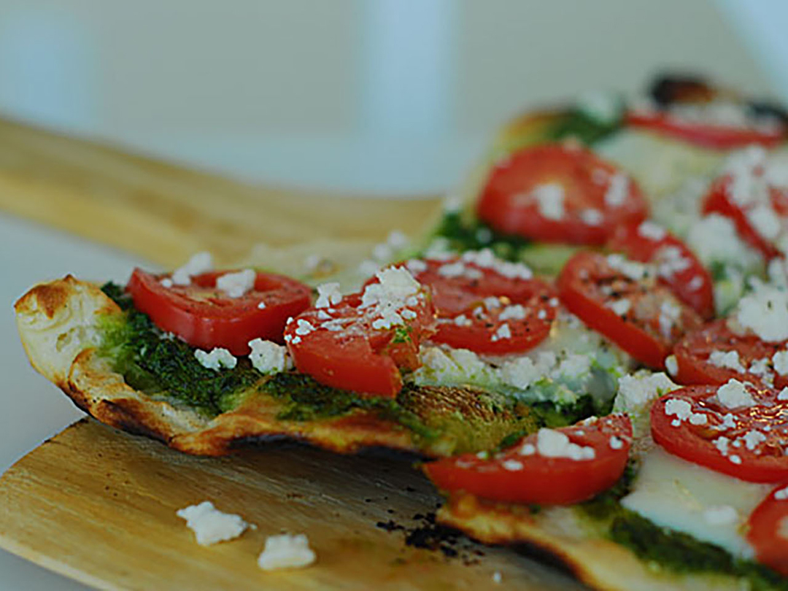

Pesto Pizza

Description
This pesto pizza is a delicious alternative to traditional pizza.
First, we need to gather our ingredients!
Ingredients
- 1 (12 inch) pre-baked pizza crust
- 1/2 cup pesto
- 1 ripe tomato, chopped
- 1/2 cup green bell pepper, chopped
- 1 (2 ounce) can chopped black olives, drained
- 1/2 small red onion, chopped
- 1 (4 ounce) can artichoke hearts, drained and sliced
- 1 cup crumbled feta cheese
Steps
- Preheat oven to 450 degrees F
- Spread pesto on pizza crust. Top with
tomatoes, bell peppers, olives, red onions,
artichoke hearts and feta cheese.
- Bake for 8 to 10 minutes, or until cheese
is melted and browned.
Go back